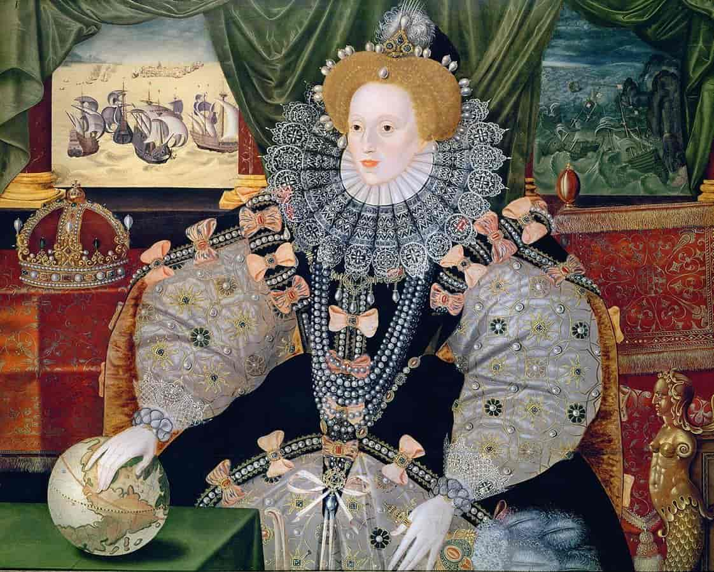

About Anne
Early Life
Anne Boleyn was the youngest daughter of Thomas Boleyn and Elizabeth Howard. Her exact date of birth is unknown. She had a brother, George Boleyn, and a sister, Mary Boleyn.
Between 1513 and 1514 Anne became a member of household to Margaret of Austria in the Court of Savoy. This ended when her father arranged to have her attend the new Queen of France, Mary Tudor, Henry VIII's sister. As the then King of France died, Anne then became maid of honor to the new Queen, before returning to England in 1522.
England
Initially Anne had returned to England for marriage, however this soon fell through. Yet it was Mary and not Anne who first had an affair with Henry. There is dispute that he may be the father of her children, however he did not claim that as he had done with another of his mistress's children.
Anne was being courted by Henry Percy, however this was refused by both his father and Cardinal Wolsey. Anne returned to court as a hand maiden to Catherine of Aragon. This was then Henry's pursuit began.
Annulment
It is believed that Anne refused to sleep with Henry unless he made her his Queen. This is after witnessing her sister's ruin, as she had previously been Henry's mistress. Due to their being civil war before his father had taken the throne, Henry had been desperate for a son, and at the time his only living child with Catherine was Mary. Because of this Anne promised that if he married her, she would give him a son.
However the Pope refused to grant Henry the divorce that he wanted, and as years passed, a change happened in England. What was known as the King's Great Matter, as Cardinal Wolsey tried, and failed, to get Henry his annulment. The Reformation happened, seperating England from Rome, and giving Henry the chance to annul his marriage to Catherine.
Queen of England
After the annulment took place, Anne married Henry on the 28th May 1533, and was crowned Queen on the 1st June 1533. Her relationship with Henry had been going on for eight years, however she would only be Queen for three.
Anne was visibly pregnant when she was crowned, and on the 7th September 1533 she gave birth. However her child was a girl, Elizabeth. This was her only child with Henry.
In 1536, Henry instructed Cromwell to find a way to end his marriage to Anne. She'd had another miscarriage of a child believed to be a boy. Henry had also met Jane Semour by this stage. In April Mark Smeaton, a court musicial was arrested and under torture admited to having a relationship with Anne. Four more men were arrested, Sir Francis Weston, Henry Norris, William Brereton, and her own brother George.
Execution
Anne was found guilty of committing adultery, and sentenced to death. The five men arrested were all executed on the 17 May 1536. Originally Anne was to be burned, however as a Queen, this was changed to execution, and with a sword rather than an axe. She was executed on the 19th May 1536. On the 30th May 1536, Henry married Jane Seymour.
Children
Born the 7th September 1533, Elizabeth is the only surviving child of Anne and Henry. At the time of her birth she was heir to the throne, however two years later her mother would be arrested, and executed.
After her mother's execution, Elizabeth was removed from the line of succession, like Mary had been prior. It was until 1544 and Henry's marriage to Catherine Parr that both sisters were returned to the line of succession, after their brother Edward.
When Henry died in 1547, Elizabeth resided with her step-mother Catherine Parr and her husband Thomas Seymour. Here it is believed that he sexually abused her. Although she was sent away in 1948, he continued his pursuit until his execution in 1549.
Edward died in 1553, and though Jane Grey took the throne for thirteen days, it was Mary who followed him. Her reign was a difficult time for Elizabeth as the two differed religiously.
Mary died in 1558, and with no children, Elizabeth took the throne. Elizabeth never married, and died without heir, ending the Tudor reign.